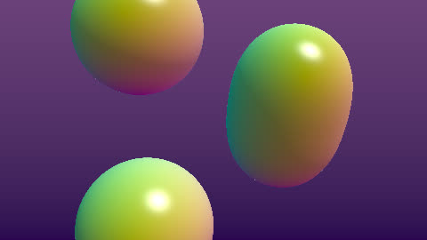

HomeAccueil / ExamplesExemples
MetaballsBoules fusionnantes
Smooth union (smooth minimum) of four moving spheres: they melt together when they get close.Union lisse (smooth minimum) de quatre sphères mobiles : elles se fondent quand elles se rapprochent.

CategoryCatégorie: Ray marchingRay marching - metaballs.glsl - 33 lineslignes - File on GitHubFichier sur GitHub
In the program: Examples, choose it, Add to the list. Or copy the code into a file next to the program and drop it on the window.Dans le programme : Exemples, choisissez-le, Ajouter à la liste. Ou copiez le code dans un fichier et glissez-le sur la fenêtre.
CodeCode
metaballs.glsl
// SPDX-License-Identifier: LicenseRef-ShaderToMP4-Proprietary
// Copyright (C) 2026 Patrick JAILLET. Tous droits reserves.
// fr: Boules fusionnantes — Union lisse (smooth minimum) de quatre sphères mobiles : elles se fondent quand elles se rapprochent.
// en: Metaballs — Smooth union (smooth minimum) of four moving spheres: they melt together when they get close.
float smin(float a, float b, float k) { float h = clamp(0.5 + 0.5 * (b - a) / k, 0.0, 1.0); return mix(b, a, h) - k * h * (1.0 - h); }
float map(vec3 p) {
float d = 1e9;
for (int i = 0; i < 4; i++) {
float f = float(i);
vec3 c = 0.9 * vec3(sin(iTime * 0.7 + f * 1.7), sin(iTime * 0.9 + f * 2.3), cos(iTime * 0.6 + f));
d = smin(d, length(p - c) - 0.55, 0.5);
}
return d;
}
void mainImage(out vec4 fragColor, in vec2 fragCoord) {
vec2 uv = (fragCoord - 0.5 * iResolution.xy) / iResolution.y;
vec3 ro = vec3(0.0, 0.0, -4.0), rd = normalize(vec3(uv, 1.6));
float t = 0.0;
for (int i = 0; i < 80; i++) { float d = map(ro + rd * t); if (d < 0.001 || t > 10.0) break; t += d; }
vec3 col = mix(vec3(0.02, 0.0, 0.08), vec3(0.15, 0.05, 0.2), uv.y + 0.5);
if (t < 10.0) {
vec3 p = ro + rd * t;
vec2 e = vec2(0.001, 0.0);
vec3 n = normalize(vec3(map(p + e.xyy) - map(p - e.xyy), map(p + e.yxy) - map(p - e.yxy), map(p + e.yyx) - map(p - e.yyx)));
col = 0.5 + 0.5 * n;
col *= 0.3 + 0.7 * max(dot(n, normalize(vec3(0.4, 0.8, -0.5))), 0.0);
col += pow(max(dot(reflect(rd, n), normalize(vec3(0.4, 0.8, -0.5))), 0.0), 30.0);
}
fragColor = vec4(pow(col, vec3(0.4545)), 1.0);
}